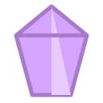

Merge Arena — redizajn
Cvijeće u svim artboardima je placeholder — 6 latica, stroke 4,0 % širine i centar 4,2 % / #FFE8B8, preuzeto iz seed_clover.svg; type_id-jevi i imena su iz rostera (§6 flower briefa). Pravo cvijeće je poseban zadatak.
Artboard 1080 × 1920, Arena 1080 × 1597 između zadatog headera (143) i footera (180). Sve mjere u px te baze. Dva smjera su 1a i 1b — razlikuju se samo po kontejneru sjemenke; sve ostalo (HUD, vreća, Muncher, pozadina) je zajedničko i prikazano ispod za preporučeni smjer.
- Kontejner mora istovremeno nositi kontrast prema tamnoj livadi i ispod svake boje cvijeta. Jedna boja to ne može — B razdvaja posao: cream rim nosi siluetu, tamni well nosi cvijet.
- Mjereno na isporučenom
seed_clover.svg: latice Meadow Clovera ★1 su#A8E6CFi#7FD4A8— na cream jastučiću (A) to je 1,34:1 i 1,68:1, na wellu (B) 9,3:1 i 7,5:1. Smjer A gubi masu cvijeta na postojećem Country Bloom artu, ne na hipotetskom. - T1 krug / T2 zaobljeni kvadrat radi u oba smjera i čita se u grayscale-u.
#FFF8F0 + outline #2D3436 @ 55 %#CCC6C0 na cream jastučiću = 1,6:1 — cvijet nestaje.seed_clover.svg — tvrdi #2D3436, 3,2 px @ 80seed_clover.svgOutline je sporno pitanje (dva izvora se ne slažu — vidi ispod), ali fill latica nije. Meadow Clover ★1 se isporučuje u #A8E6CF i #7FD4A8:
Na smjeru A masa cvijeta se stapa s jastučićem i pod bilo kojom konvencijom outlinea — tvrdi outline spašava siluetu, ne tijelo. Zato preporuka ne zavisi od toga kako se outline razriješi.
Otvoreno pitanje outlinea: seeds-flowers-cd-brief.md §2 propisuje „outline ~20 % tamniji od fill-a, 2–4 px", dok jedini isporučeni asset seed_clover.svg koristi tvrdi #2D3436 @ 3,2 px / 80. Treba ga razriješiti prije nego cvijeće za 7 preostalih sezona krene u produkciju — ali ne blokira izbor kontejnera.
#FFF8F0 + well #22342A (livada, 20 % tamnije)Cream rim od 14–18 px je jedina svijetla masa na tamnoj livadi, pa se polje čita kao mreža „sadnica". Well je ista livadska zelena, 20 % tamnija — cvijet uvijek sjedi na tamnoj podlozi bez obzira na sezonu.
Prazna Arena, tutorijal, puno polje, overlay
Na 1080 × 1133 px, s keepout zonama za vreću, Pipa i gnijezdo, ostaje 40 legalnih pozicija pri minimalnom razmaku centara od 142,8 px. Slučajni spawn (dart throwing) puca iznad ~22 sjemenke. Prikazani raspored je heksagonalna rešetka, korak 150 px, jitter ± 3,5 px — jedini koji pouzdano primi 30. Za ≤ 24 koristi se korak 164 px i jitter ± 9 px (organskije). Preporuka: ARENA_MAX_CHIPS ostaje 30, ali spawn ide na rešetku.
SeedChip — spec i stanja
Tier nosi oblik (krug / r 38) i debljina rima (11 / 15 px), ★3 gold rim + dashed prsten. Nikakav tekst — svaki natpis koji staje na 134 px chip pada na ~18 px (≈ 6,5 sp), što je ispod minimuma od 38 px iz §4.1 i isti defekt koji §3.3 #5 prijavljuje za današnji T2 natpis.
SeedBag i Muncher — sva stanja
ARENA_PEST_EAT_RADIUS (36 px) je odvojen od vizuelnog radiusa, pa rast s 56 na 104 px ne mijenja balans — samo pomjeri provjeru sudara na centar, ne na ivicu.
HUD komponente i pozadina

T3 trenutak — storyboard
Rješava „kristal nestane" (§3.3 #10): igrač vidi kuda ide i koliko ih ima. Ukupno 0,74 s od pusti-prst do punch-a brojača.
Tekstovi — stari → novi
Kraće je čitljivije na 38 px. Najduža nova poruka je 55 znakova i staje u 2 reda.
Slojevi → Godot
Isporuka 12 — asseti
Van zadatka — ideje
- „Sort by type" dugme: ne bih. Rešetkasti spawn već grupiše slično po redovima, a dugme koje preslaže polje ukida vrijednost magneta.
- Dugi pritisak na sjemenku → kratko osvijetli sve iste na polju (isti efekt kao pair pulse, bez vučenja). Pomaže kad je 30 na polju.
- Muncher nosi ukradenu sjemenku 0,3 s prije nego je pojede — daje igraču prozor da je „spasi" mergeom i pretvara pritisak u priliku.
- StashCounter tap → mali tooltip „spend in Camp", bez navigacije (navigacija je zaključana).